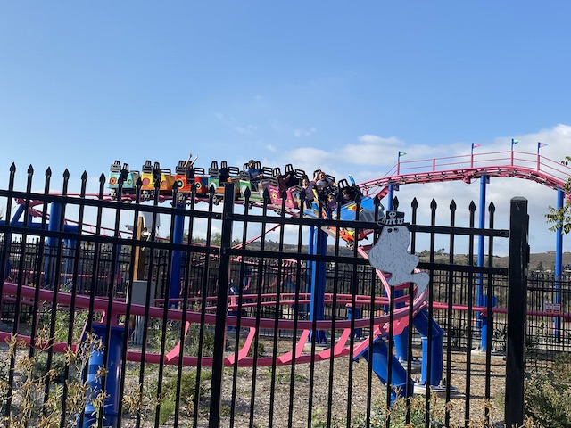
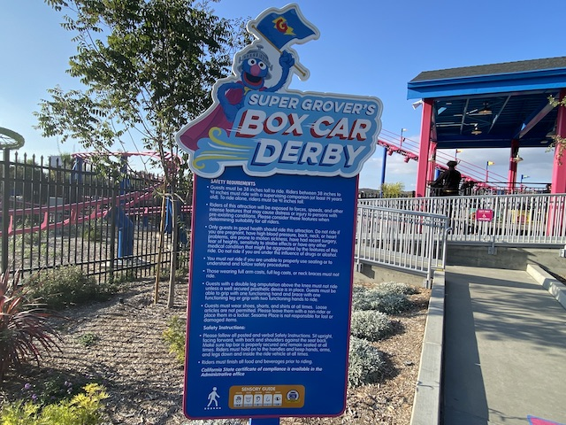

| |
Super Grover's Box Car Derby Review

We're here at Sesame Place San Diego. And we're reviewing Super Grover's Box Car Derby. Their kiddy coaster. Meh, not the best kiddy coaster. But....it's a kiddy coaster. Get in the cars, pull down the lap bar, and we're off. Head on up the lifthill. Try and count how many seconds this lifthill will take, and...too late. Go down the first curved drop. Wee. Well....not bad by kiddy coaster standards. Go through an upward helix, which....I guess that's good for kids. Then go straight down another curved drop. Hmm. Sensing a pattern here. Go through a banked turn, and back in the station for us. Yeah. Not the worst kiddy coaster, but...it's just a Figure 8. Meh. I guess it's one of the better kiddy coasters, but....it really doesn't matter. Is that a monster in the mirror? No. That's just a credit whore. Though there's not much of a difference to some people. But seriously, this is only for credit whores.
3/10
Location: Sesame Place San Diego
Opened: 2022
Built by: Zeirer
Last Ridden: October 16, 2022
I have ridden this exact same ride at the following parks.
Busch Gardens Williamsburg
Super Grover's Box Car Derby Photos

Home
|